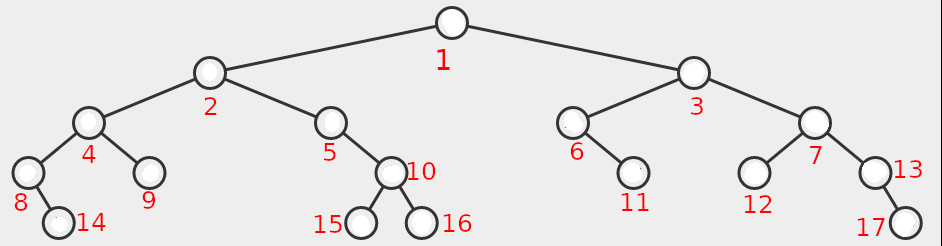

Disciplinas
-
ESTRUTURA DE DADOS. Concluído
Materiais
- Prof° Especialista: Gedson Faria, Graziela Santos de Araújo e Jonathan de Andrade Silva.
- Iniciado em sexta, 31 mai 2024, 20:48
- Estado Finalizada
- Concluída em sexta, 31 mai 2024, 22:01
- Tempo empregado 1 hora 12 minutos
- Avaliar 6,00 de um máximo de 10,00(60%)
Questionário ✅ ❌
Pergunta 1
Considerando a árvore binária de busca acima, ao removermos a chave do nó raiz, obteremos a árvore com topologia abaixo. Preencha os valores dos nós rotulados x, y, u, v, w com os valores corretos:
Resposta: x = 59, y = 66, u = 64, v = 70, w = 60. ✅Resolução:
- x = 59 (novo nó raiz).
- y = 66 (subárvore direita da nova raiz).
- u = 64 (nó movido após a remoção de 59).
- v = 70 (subárvore direita de 66).
- w = 60 (filho esquerdo de 64).
Pergunta 2
Seja T uma árvore binária de busca qualquer com n nós e altura h. A operação de busca por uma chave x em T gasta sempre tempo proporcional à altura da árvore, ou seja, O( h) = O(log n).
Escolha uma opção: Verdadeiro ou Falso.
Resposta: Falso. ✅Resolução:
- A afirmação só é verdadeira para árvores balanceadas
Pergunta 3
Considere a inserção numa Árvore Binária de Busca (ABB) dos seguintes nós: 51, 20, 40, 82, 35, 73, 28 e 77, nessa ordem. Dado que a raiz fica no nível 1 da árvore, a altura da árvore e o nível do nó 35, respectivamente, serão:
Escolha uma opção:
- a. 7 e 4.
- b. 6 e 4.
- c. 6 e 3.
- d. 5 e 5.
- e. 5 e 4.
Resolução:
- Altura da Árvore: A altura é o número máximo de arestas de um caminho da raiz a uma folha. Contamos os níveis:
- Raiz (51): Nível 1.
- 20 e 82: Nível 2.
- 40 e 73: Nível 3.
- 35: Nível 4.
- 28: Nível 5.
Pergunta 4
Considere as afirmações a seguir.
- A raiz da árvore se encontra no nível 1.
- O nível de qualquer nó é igual ao nível do seu pai mais 1.
- A profundidade de uma árvore é igual ao maior nível encontrado entre todos os seus nós.
Partindo-se de tais premissas, escolha o item a seguir que contém a menor e a maior quantidade de nós, respectivamente, que poderiam estar em uma árvore binária de profundidade 4:
Escolha uma opção:
- a. 5 e 16.
- b. 3 e 16.
- c. 4 e 16.
- d. 3 e 15.
- e. 4 e 15.
Resolução:
- Com profundidade 4, teremos 4 níveis, portanto a árvore menos balanceada terá 4 nós (um nó por nível).
- Com profundidade 4, a quantidade máxima de nós é 2⁴ - 1 = 16 - 1 = 15.
Pergunta 5
Dada a árvore binária de busca a seguir, escreva as chaves visitadas em um percurso/passeio em pré-ordem. Escreva todas as chaves como mostrado na figura (em maiúsculo) e sem espaço entre elas. Ex: IOUEA
 Resposta: MGHDAJLBCQFZS. ❌
Resposta: MGHDAJLBCQFZS. ❌
Resolução:
- A sequência de chaves visitadas em pré-ordem sempre começa com a raiz da árvore e, em seguida, visita recursivamente o subárvore esquerdo e o subárvore direito de cada nó.
- As chaves são visitadas antes de seus descendentes.
- Essa sequência de visitação é útil para diversas operações em árvores binárias de busca, como inserção, exclusão e busca.
Pergunta 6
Dada a árvore binária de busca a seguir, escreva as chaves visitadas em um percurso/passeio em pós-ordem. Escreva todas as chaves como mostrado na figura (em maiúsculo) e sem espaço entre elas. Ex: IOUEA.
Resposta: C H A L G D J B Q F S Z P M. ❌
Resolução:
- A sequência de chaves visitadas em pós-ordem visita recursivamente os subárvores esquerdo e direito de cada nó antes de visitar o próprio nó.
- As chaves são visitadas após seus descendentes.
- Essa sequência de visitação é útil para diversas operações em árvores binárias de busca, como travessia da árvore, impressão da árvore e destruição da árvore.
Pergunta 7
50, 35, 66, 28, 47, 52, 70, 40
Considerando a árvore binária de busca acima e o algoritmo de remoção apresentado no livro de Thomas Cormen (2013), ao remover o valor da raiz, qual das chaves a seguir poderia ocupar o lugar dela?
Escolha uma opção:
- a. 40.
- b. 70.
- c. 47.
- d. 35.
- e. 66.
Pergunta 8
Considerando a árvore binária abaixo, identifique o número dos nós.
Responda:
Qual a posição do nó que deve conter o maior valor da árvore?
Resposta: 17. ✅Pergunta 9
Suponha que queremos remover o nó raiz da árvore binária de busca a seguir. Considerando a solução em que podemos substituí-la por uma chave da subárvore direita, qual valor de chave deverá ocupar a raiz da árvore?
Resposta: 79. ❌Pergunta 10
Dado um conjunto de chaves A = {a1, a2, …, an}, satisfazendo a1 < a2 < … < an, é correto afirmar que existe apenas uma árvore binária de busca para A.
Escolha uma opção: Verdadeiro ou Falso.
Resposta: Falso. ✅